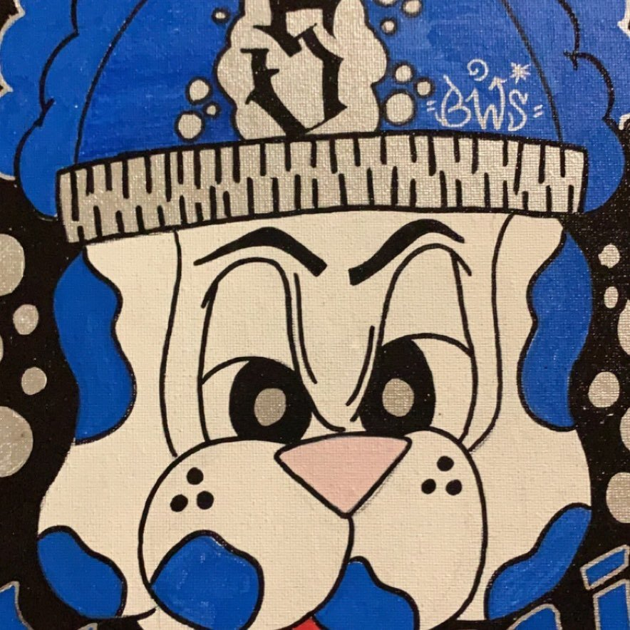

Paul Anthony Sanchez
Also known as Skribbz Dablue
Paul Anthony Sanchez, better known as Skribbz Dablue, is a graffiti-inspired artist whose journey has been shaped by resilience and creativity. From vibrant murals that breathe life into urban landscapes to intricate miniatures and replicas, Paul’s work is a testament to the transformative power of art. Inspired by legendary names like Banksy and Chaka (the renowned LA graffiti artist), Skribbz has spent the last decade honing his craft, creating pieces that challenge conventional notions of where art belongs.
Raised as the eldest of five siblings in the heart of Southern California, Paul grew up deeply influenced by the vibrant yet often harsh street culture surrounding him. His art reflects the raw beauty and struggle of that environment. He shares a profound message through his work: "Art can be anywhere—not confined to a palette and canvas."
Despite his undeniable talent, Paul’s journey has not been without hardship. Battling the weight of addiction, chronic physical pain, and financial instability, he continues to push forward, using his art as both an outlet and a lifeline. Each stroke of his brush or spray of his can represents a small victory against the adversity that has defined much of his life.
Through sheer determination, Skribbz Dablue inspires others to see that creativity can thrive even in the darkest moments. His pieces are not just art; they are windows into a soul fighting for purpose and expression against all odds.